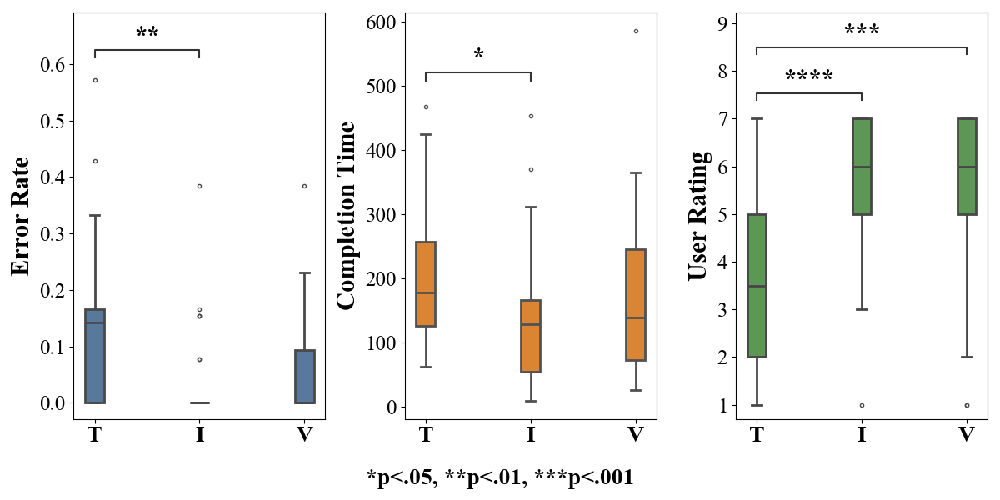
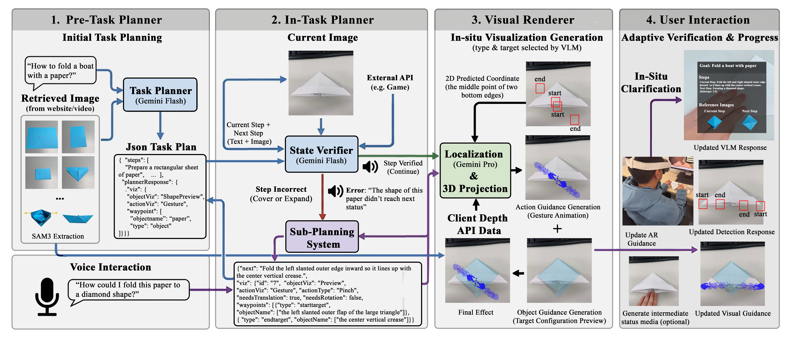
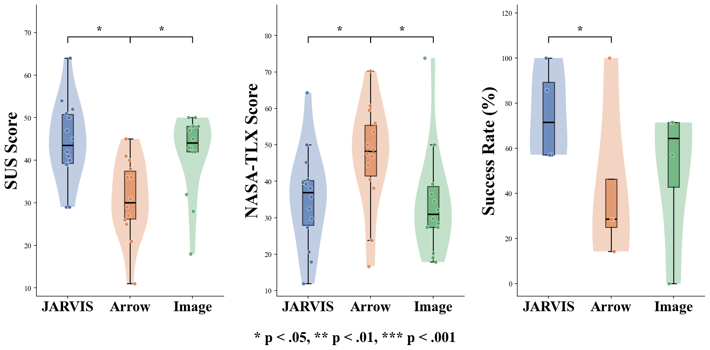
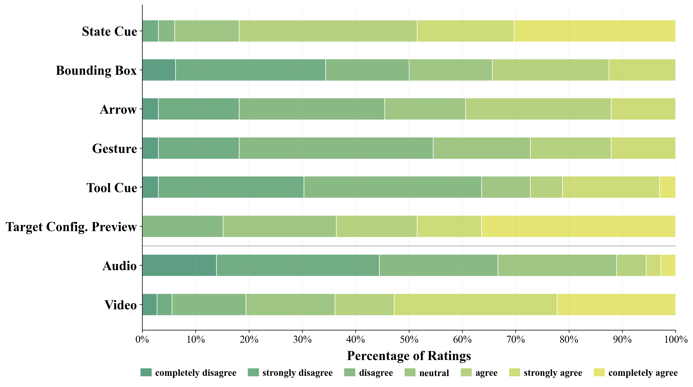
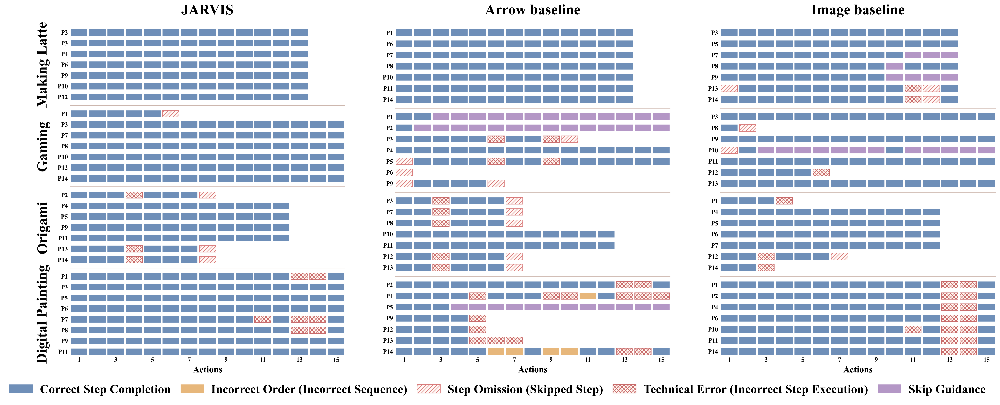

JARVIS: A Just-in-Time AR Visual Instruction System for Cross-Reality Task Guidance
arXiv Preprint, 2026
Abstract
Many everyday tasks require users to switch between external tutorials and the task environment, increasing cognitive load and interrupting task flow. JARVIS explores how augmented reality, vision-language models, and large language models can support just-in-time guidance for cross-reality tasks. Given a high-level user prompt, JARVIS generates contextual step-by-step AR instructions, monitors task state, verifies progress in real time, and provides adaptive visual feedback. The system is designed for tasks that span physical and virtual workspaces, including real-to-real, real-to-virtual, virtual-to-real, and virtual-to-virtual guidance scenarios.
Formative Study

To inform the system design, the project studies how users perform cross-reality tasks and where conventional tutorials fail to provide timely, contextual, and spatially grounded guidance.
Design Goals
- D1. Generate task instructions from a single high-level user prompt.
- D2. Provide situated visual guidance in augmented reality.
- D3. Support task transitions across physical and virtual environments.
- D4. Verify user progress and task state in real time.
- D5. Provide adaptive feedback when users need correction or confirmation.
- D6. Reduce the need to switch between external tutorials and the task workspace.
System

JARVIS interprets a user’s task prompt, decomposes it into step-level instructions, grounds the instructions in cross-reality context, and presents just-in-time AR visual feedback. The system combines task planning, visual state understanding, real-time verification, and adaptive instruction generation.
Cross-Reality Task Guidance
JARVIS supports four types of cross-reality guidance: real-to-real, real-to-virtual, virtual-to-real, and virtual-to-virtual. These categories describe how task information and user actions move between physical objects, digital interfaces, and virtual content.
Evaluation

The evaluation examines how JARVIS affects task performance, usability, workload, and user perception of AR visual guidance across representative cross-reality tasks.


Demo Video
Code
Code will be released soon.
BibTeX
@article{sun2026jarvis,
title={JARVIS: A Just-in-Time AR Visual Instruction System for Cross-Reality Task Guidance},
author={Sun, Yusi and Jiang, Ying and Lu, Jiayin and Yang, Yin and Kuo, Yong-Hong and Jiang, Chenfanfu},
journal={arXiv preprint arXiv:2604.10108},
year={2026}
}